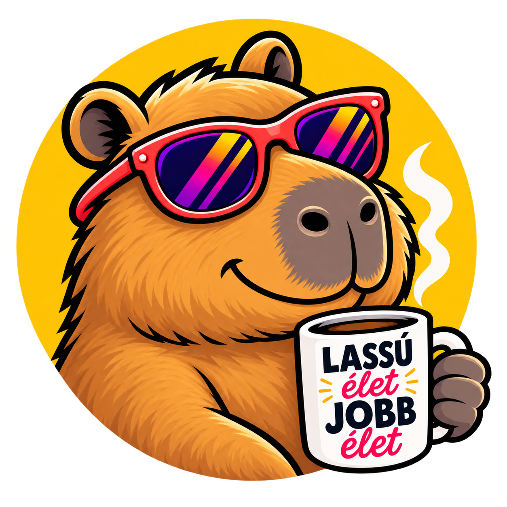
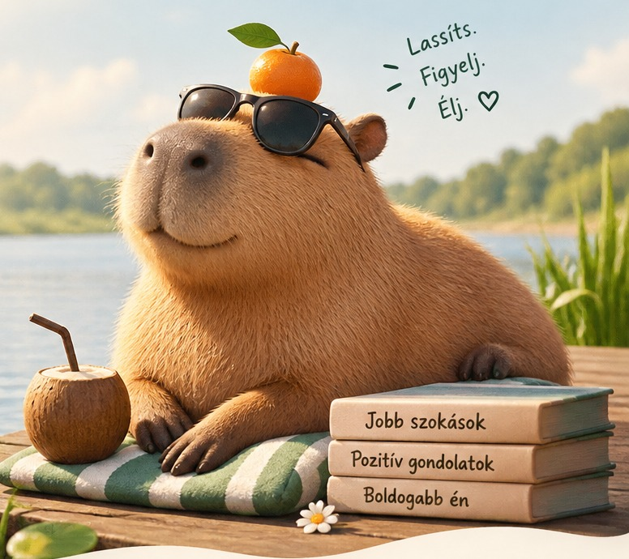

Lélek
Stressz, túlterheltség, pihenés, figyelem és jelenlét.
Felfedezem →
kapibara.huéletmód a rohanás ellen
Apró kihívások, gondolatok és egyszerű ötletek ahhoz, hogy ne csak végigérj a napon, hanem meg is érkezz benne.
Nem kell mindent ma.

A modern élet tele van értesítésekkel, határidőkkel, zajjal és állandó készenléttel. A kapibara.hu nem egy újabb teljesítményprojekt.
Apró változtatásokat keresünk, amelyek visszaadják a figyelmet annak, ami tényleg fontos.
02 / KAPIBARA-BÖLCSESSÉGEK
MAI KAPIBARA-KIHÍVÁS
03 / MOST ÉRDEMES ELŐVENNI
04 / TÉMÁK
Stressz, túlterheltség, pihenés, figyelem és jelenlét.
Felfedezem →Alvás, mozgás, táplálkozás és regeneráció.
Felfedezem →Telefon, képernyőidő, közösségi média és digitális detox.
Felfedezem →Kevesebb tárgy, zaj és impulzus. Több hely annak, ami fontos.
Felfedezem →Család, barátok, párkapcsolat és valódi beszélgetések.
Felfedezem →Séta, erdő, vízpart, napfény és csend.
Felfedezem →05 / CIKKEK
Nincs találat. A kapibara szerint ez is rendben van.
07 / A FILOZÓFIA
Hanem azt, hogy nem mindent csinálsz egyszerre. Nem adod fel a céljaidat, csak nem áldozod fel értük az egész életed.
08 / A KAPIBARA
A kapibara nem akar mindenáron bizonyítani. Nem akar gyorsabb lenni. Nem akar minden pillanatból teljesítményt csinálni.
Egyszerűen jól van a saját tempójában.
Tedd le a telefont. Nézz ki az ablakon. Vegyél egy nagy levegőt.
Kezdem kicsiben